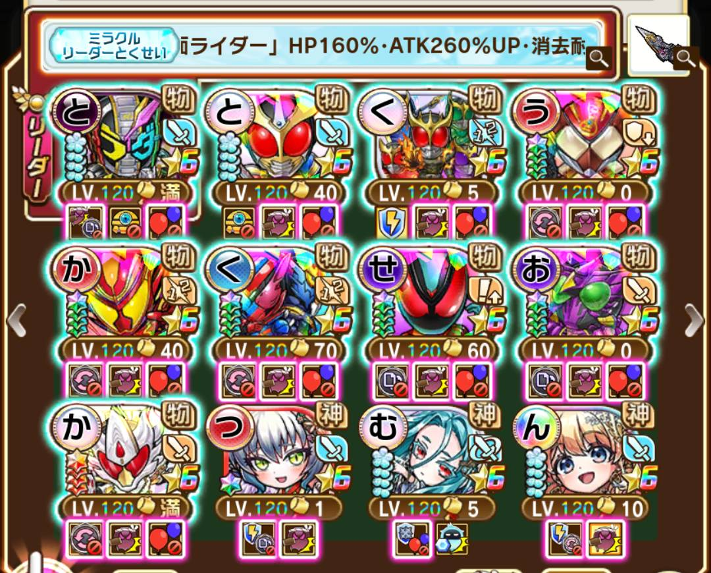
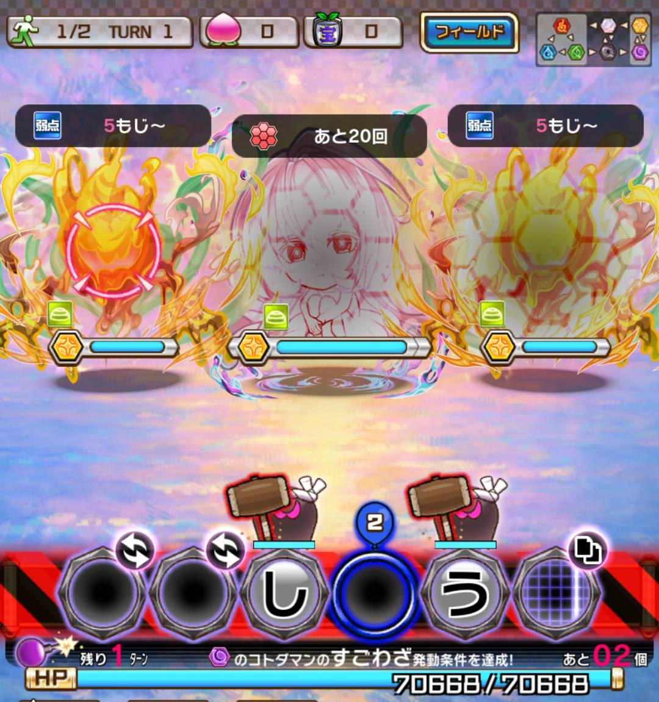
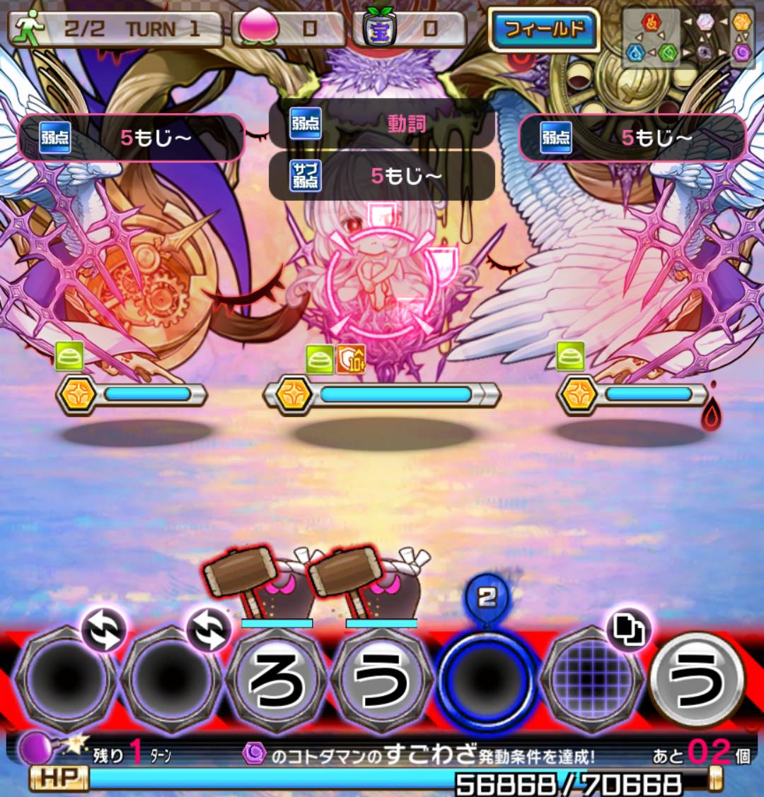
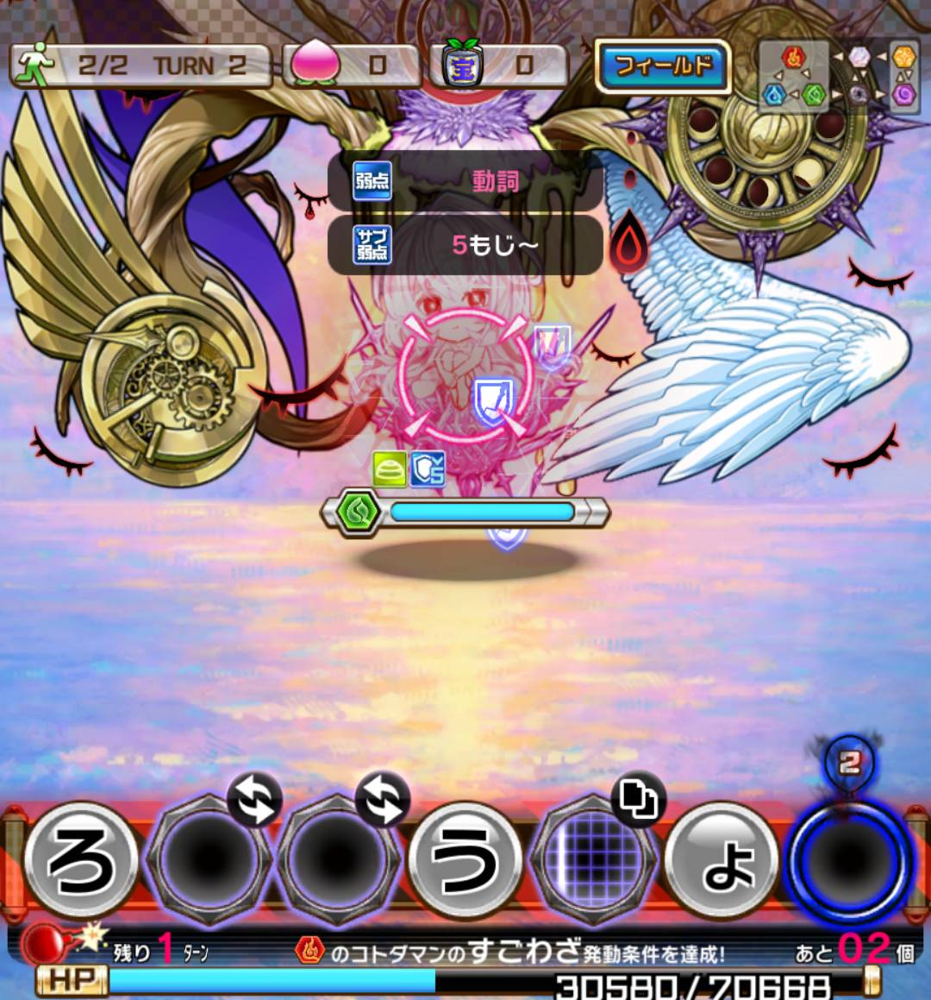

ライダーパーティーでのゆめのゆめ1w1t-2w2t攻略です
細かい概要はyoutubeで確認ください（※後日更新予定！）
ジオウOFには、「神キラー、クリ率up」のシンコトワリ
SPアギトには、「神キラー、クリ率up、上限アップ（黒）」のシンコトワリをつけましょう。
他キャラにはエネチャコトワリを持たせて置くと良い。

ジオウOF
SPアギト
SPクウガ
ツラミ、ムオン、ンヘループ（グランド）
「こ、う」のチェンジ（ライダー）
コピガ＆スマッシュ持ち闇属性（ライダー）
サイキョージカンギレード（ジオウ剣）
代替案
ガンガンセイバー、クウガエンブレム等
ノクスも一応適正。だが、メイン属性が水で、闇属性の「ゅ」を使えないので注意。
使う場合はなるべく「し」で置こう。



アギトが物凄い火力でサクサク倒してくれます！
思ったより火力が出ない場合は、お守り、コトワリ等を見直すといいかもしれません！
以上です！頑張ってください！